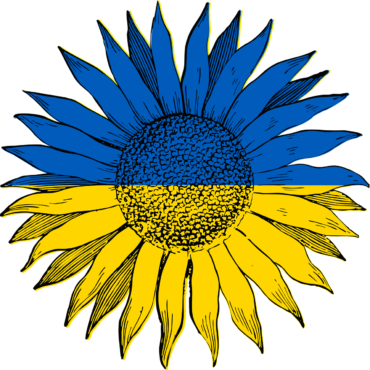

Hello! My name is Olena Salnikova.
I am a technology enthusiast currently studying programming at Code the Dream. I enjoy learning about new technologies and working on projects that allow me to apply my skills and creativity.
This website is a part of my Open API Project, where I combine my curiosity and coding skills to explore real-world data using open source APIs.